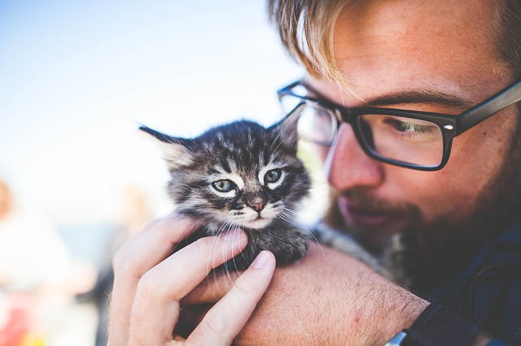

 Durham House of Pets has been producing their own products from scratch since the beginning. All products are house made, including the food for the animals. DHP has been rated top local supply pet store in New Hampshire for the past decade, due to our impeccable products and excellent customer service skills.